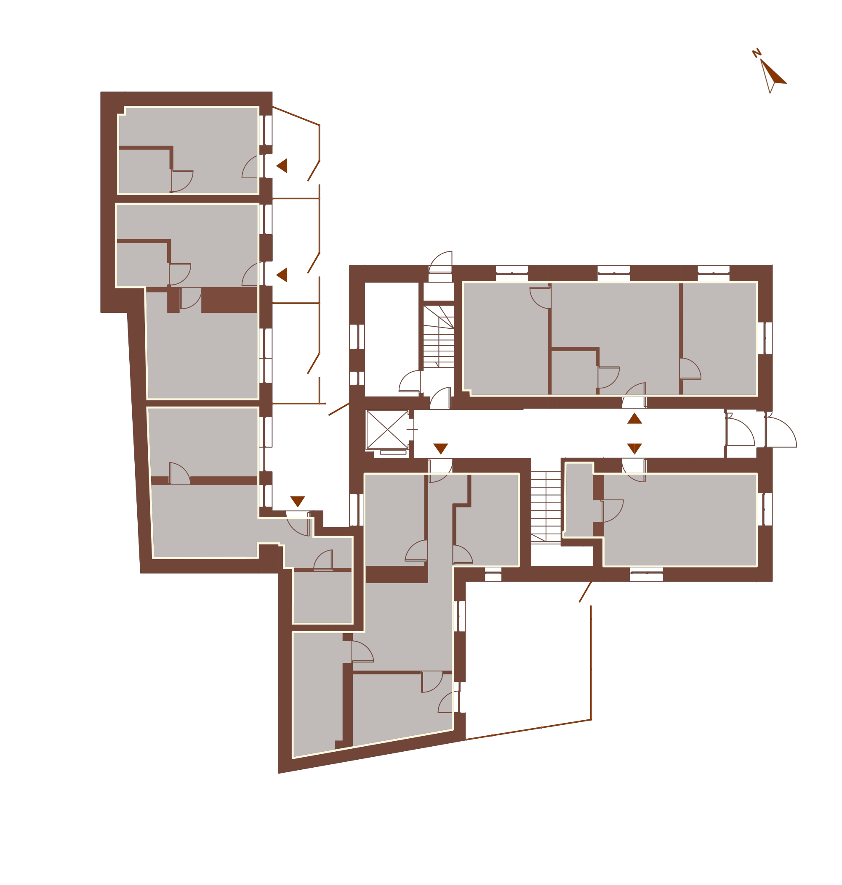
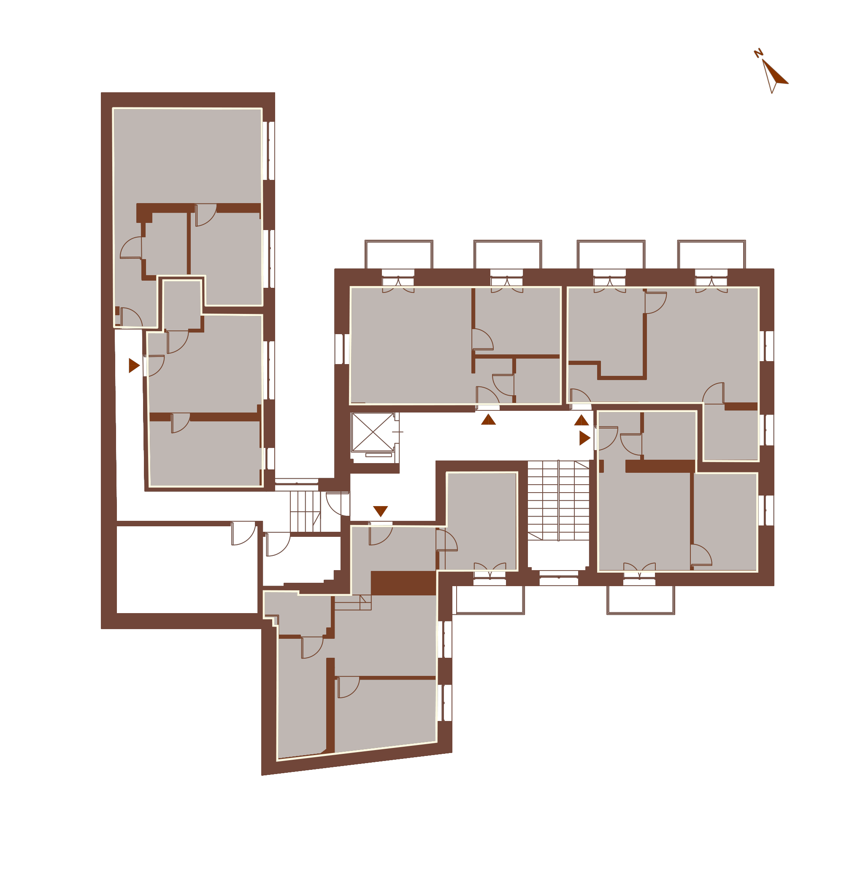
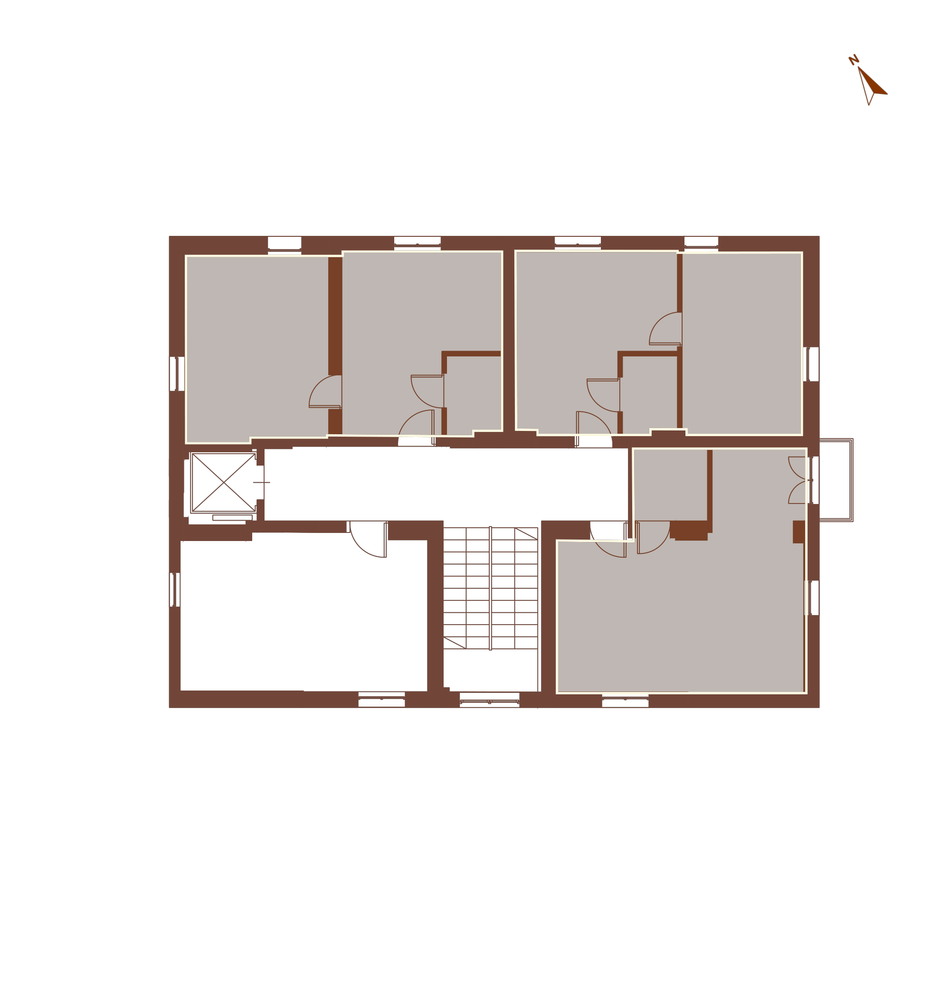

Mapa apartamentów
Wybierz lokal z rzutu piętra
Tłem jest baza_bez_punktów, podświetlenia są z plików maska, a punkty są osobną warstwą z najwyższym z-index.






Mapa apartamentów
Tłem jest baza_bez_punktów, podświetlenia są z plików maska, a punkty są osobną warstwą z najwyższym z-index.



